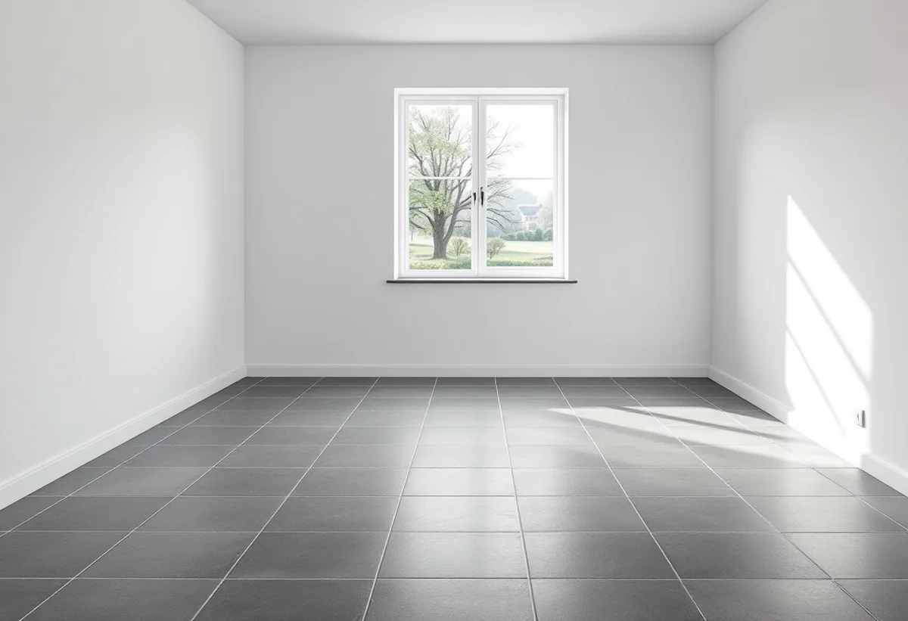

Genomgång på plats
Vi känner på golvet, tittar på bjälklaget och mäter nivåskillnader mellan rummen.
Längs farleden i Nacka står villor som byggdes för somrar, med verandor, lusthus och sjöutsikt.
Beskriv jobbet kort.
Något blev fel. Kontrollera uppgifterna eller ring 08 12 410 276.
Vi tittar på jobbet på plats innan du får offert.
Du ser vad som ingår och vad det kostar.
Vi drar av ROT direkt och sköter ansökan.
Geal Entreprenad AB, Bromma. Org.nr 559303-7566.

I dag bor många där året om, och då ställs andra krav på golven än när huset stängdes på hösten. Geal Entreprenad AB lägger nya golv, slipar gamla och rättar till underlaget i hela Nacka, med gratis platsbesök och skriftligt kostnadsförslag.
Nacka kommuns kulturmiljöprogram om sommarnöjena vid farleden berättar att det var ångbåten som under senare delen av 1800-talet gjorde den strandnära villabebyggelsen möjlig. Husen kallas ofta grosshandlarvillor, eftersom det var grosshandlare och fabrikörer som hade råd och fritid att bygga dem. Snart kunde även hantverkare och lägre tjänstemän köpa ett eget sommarnöje eller hyra in sig i en större hyresvilla.
Programmet skriver att de ljusa verandorna stod i skarp kontrast till vinterbostadens mörka, mer formella inredning. Sommarhuset var alltså tänkt som något lättare och enklare. Under 1900-talets första årtionden byggdes dessutom mindre sportstugor i skogsbackarna bakom villorna, och från 1930-talet även hus i funkisbetonad stil med lägre tak.
Ett golv som bara användes några månader om året har ofta slitits mindre än man tror, men det har heller inte byggts för ett helt år av vardag. När huset blir permanentbostad är golvet en av de första sakerna som märks – det knarrar, sviktar eller är kallt mot fötterna.
Ibland räcker det inte att byta ytskikt. Är golvbjälkarna för klena eller skadade behöver de förstärkas eller bytas, och då rör arbetet husets bärande konstruktion. Nacka kommun skriver att ändringar i bärande konstruktioner kräver en anmälan till bygglovenheten och att du, som vid ett bygglov, måste ha fått startbesked innan arbetet får börja.
Därför bedömer vi bjälklaget vid besöket och säger till om ett åtgärdsförslag kräver anmälan. Gäller det bara ytskikt, nya skivor och att skruva fast lösa brädor rör arbetet normalt inte den bärande konstruktionen. Ska golvet i stället ligga kvar och bara få nytt liv kan det slipas – läs mer om golvläggning och golvslipning.
I ett hus som står i en sluttning ligger nedre planet ofta delvis mot marken, och där kan markfukt komma underifrån. Byggkeramikrådet skriver att man i källare med markfukt generellt bör undvika alltför stora plattor och alltför smala fogar, och anger 900 cm² som största rekommenderade plattstorlek. Även flytspackel och spackel behöver väljas i nära samråd med leverantören.
Ska det bli trä eller parkett i stället visar Golvbranschen att trä tar upp fukt och sväller när fuktigheten är hög. Betongen bör därför mätas innan något läggs. Är rummet ett badrum eller en tvättstuga blir det ett tätskiktsjobb, som vi tar inom badrumsrenovering i Nacka.
I en mindre stuga är golvytan liten men antalet övergångar stort. Varje rum kan ha sin egen nivå efter tillbyggnader, och dörrarna är sällan anpassade för ett tjockare golv. Vi planerar trösklar och höjder innan materialet väljs, så att dörrar inte behöver kapas i onödan och golvet inte får skarvar mitt i ett rum.
Funkishusen från 1930-talet har ofta enklare och ljusare rum med få detaljer. Där passar ett golv med enkel läggning och en lugn yta, och det är ofta golvet som avgör om ett litet rum upplevs som öppet eller trångt. Vi visar prover på plats, så att du kan se materialet i husets eget ljus innan du bestämmer dig.
I ett hus som bara användes på sommaren var ett kallt golv sällan något problem. Bor man där i januari blir det tydligt. Ofta hänger det ihop med hur bjälklaget under är byggt och isolerat, och då är golvbytet ett bra tillfälle att se över konstruktionen innan det nya golvet läggs ovanpå.
Kulturmiljöprogrammet nämner också äldre villor med en traditionell timmerstomme, som Grundet från 1868 vid Gustavsvik. I sådana hus kan golv och bjälkar ha rört sig under lång tid, och det nya golvet behöver kunna följa med huset i stället för att spricka i skarvarna. Vi väljer därför underlag och golvtyp efter hur huset faktiskt rör sig, inte bara efter utseendet.
Vi känner på golvet, tittar på bjälklaget och mäter nivåskillnader mellan rummen.
Vi säger om det räcker att rikta upp eller om bjälkarna behöver förstärkas, och om det kräver anmälan.
Du ser vad som är arbete, material och förarbete, och vad som ger ROT-avdrag.
Gamla golv tas bort, lösa delar fästs och nya skivor läggs där det behövs.
Golvet läggs eller slipas, med trösklar och lister anpassade efter dörrarna.
Vi städar, går igenom golvet och lämnar råd om skötsel.
Skatteverket räknar slipning och byte av golv som rotarbete i småhus. Avdraget gäller bara arbetskostnaden och är 30 procent av den, med ett tak på 50 000 kr per person och år och 75 000 kr tillsammans med rut. Golvmaterial och resor ger inget avdrag.
Äger ni huset tillsammans och bor där båda kan avdraget delas, men det blir sammanlagt högst 30 procent av arbetskostnaden. Vi drar avdraget direkt på fakturan.
I ett gammalt sommarhus väger bjälklagets skick och antalet nivåskillnader mellan rummen tyngst, tillsammans med hur mycket som behöver rivas. I källarplanet styr fuktmätning, avjämning och plattval. Vi börjar med ett gratis platsbesök, och du får ett skriftligt kostnadsförslag innan något arbete beställs.
Parkett, trägolv, klinker och slipning.
Golvläggning i Stockholm →Takbyte, takbesiktning och plåtarbeten.
Takläggare i Nacka →Saltsjöbaden, Boo och Älta.
Takrenovering i Nacka →Verandor, panel och altaner.
Snickare i Nacka →Sekelskiftesvillor och sommarnöjen.
Målare i Nacka →Panel, puts och isolering.
Fasadrenovering i Nacka →Saltsjöbanan, kommunens mark och kulturkartan.
Attefallshus i Nacka →VA, LTA och dagvatten på tomten.
Byggföretag i Nacka →Uthus, räcken och plåt kring villan.
Fasadmålning i Nacka →Villasamhällena vid Saltsjöbanan.
Fönsterbyte i Nacka →Linoljefärg, väder och verkstad för villafönster.
Fönsterrenovering i Nacka →Slipa och olja trägolvet.
Golvslipning i Nacka →Farledens plåttak och Saltsjöbadens villor.
Plåtslagare i Nacka →Skorsten, huvar och genomföringar vid nytt tak.
Takbyte i Nacka →Ny tapet och dold dekor i äldre villor.
Tapetsering i Nacka →Strandskydd och villasamhällen.
Tillbyggnad i Nacka →Nytt värmesystem när huset ändå görs om.
Totalrenovering i Nacka →Eller ring 08 12 410 276, mån–fre 08–17.
Beskriv jobbet kort.
Något blev fel. Kontrollera uppgifterna eller ring 08 12 410 276.